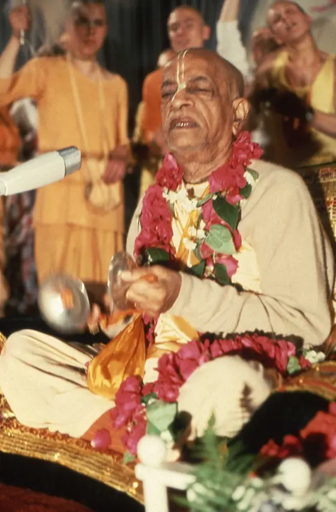

A Message of Peace and Pure Spiritual Realization
Chula Vista Star News, 1976
The essence of Vedic knowledge
Welcome to Vanipedia, a dynamic, living encyclopedia of Śrīla Prabhupāda’s words (vani). We are building an unparalleled digital repository of his text, audio, video, and images, comprehensively compiling his teachings from every angle of vision.

Founder-Ācārya and Preeminent Śikṣā-Guru of the International Society for Krishna Consciousness
Srila Prabhupada: The Founder-Acarya of ISKCON
A GBC Foundational Document. Translated in 17 Languages.
Calcutta
His birth.
Śrīla Bhaktisiddhānta Sarasvatī
Meets his spiritual master.
Back to Godhead
The first issue, typewritten and distributed by hand.
Rādhā-Dāmodara, Vṛndāvana
Where he worked on the Bhāgavatam before leaving for America.
The Jaladuta
He sails for the United States.
New York
The International Society for Krishna Consciousness is incorporated.
San Francisco
Moscow
His first and only visit to the USSR.
Vṛndāvana
His departure.
Prototype: these pages are not connected yet.
AI-assisted summaries of Vaniquotes categories. Quotations verbatim; framing generated. See Methodology.
Nectar Drops are short, focused audio excerpts of less than 90 seconds, drawn directly from Śrīla Prabhupāda’s recorded lectures, conversations, and morning walks.
Samadhi is not an artificial bodily state; …
Source: SB 3.28.6, Translation and Purport
Chula Vista Star News, 1976
Prototype: this page is not connected yet.
Personal eyewitness recollections, intimate exchanges, and devotional memories with His Divine Grace Śrīla Prabhupāda recounted by Yaduvendu das.
Prototype: these pages are not connected yet.